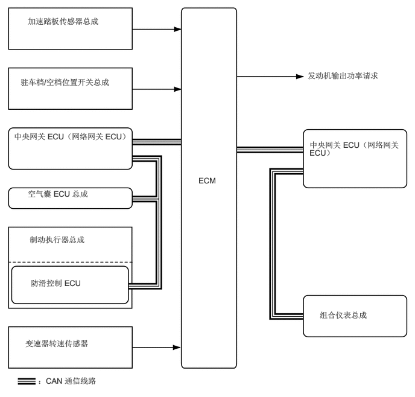
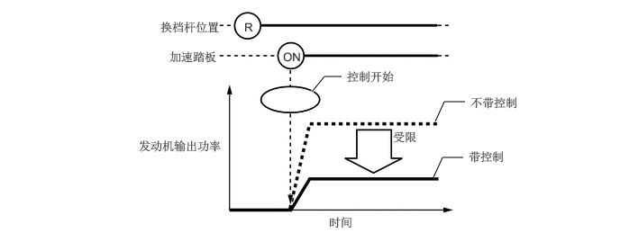
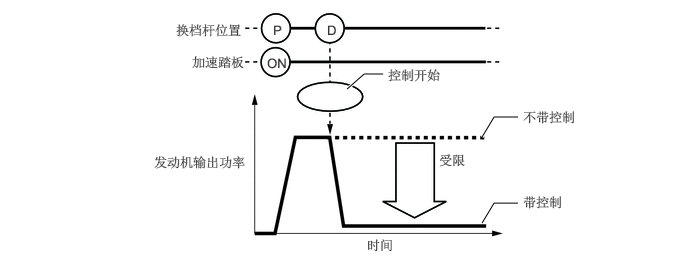
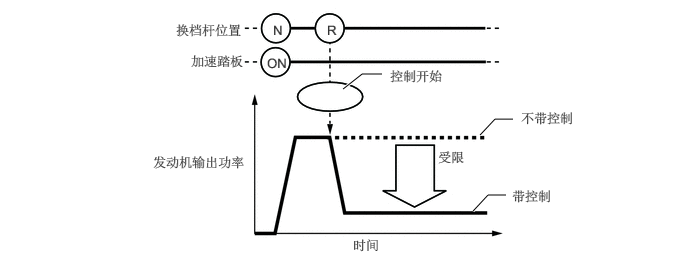

功能
检测到异常的驾驶员加速踏板操作和换档操作时，此系统限制发动机输出功率并告知驾驶员。

系统工作时，即使驾驶员踩住加速踏板，上坡时发动机输出功率也可能增大，下坡时发动机输出功率也可能减小。在斜坡上时，系统可将车速和加速度限制为低于预定限值，这并非故障。
操作 VSC OFF 开关以关闭 TRC 时，系统不工作。
倒车操作期间的控制
倒车时，对过度踩下加速踏板做出响应。
根据道路坡度校正发动机输出功率。
| 控制起动条件（满足所有条件时控制开始。） | ·
换档杆置于 R。 ·
踩下加速踏板过度。 |
| 控制操作 | 限制发动机输出功率，以使车速和加速度等于或低于特定值。 |
| 控制停止条件（满足任一条件时，控制停止。） | ·
换档杆未置于 R。 ·
完全松开加速踏板。 |

手动换档操作期间的控制
对踩下加速踏板时进行的换档操作做出响应。
根据手动换档操作模式，改变限制量。
根据道路坡度校正发动机输出功率。
从驻车位置起步时的控制
| 控制起动条件（满足所有条件时控制开始。） | ·
换档杆从 P 切换至 D/S，或从 P 切换至 R。 ·
加速踏板开度约为 1/5 或更大。 |
| 控制操作 | 限制发动机输出功率，以使车速和加速度等于或低于特定值。 |
| 控制停止条件（满足任一条件时，控制停止。） | ·
换档杆置于 P 或 N 位置。 ·
完全松开加速踏板。 |

其他情况下的控制
| 控制起动条件（满足所有条件时控制开始。） | ·
换档杆从 R 切换至 D/S、从 D/S 切换至 R，或从 N 切换至 R。 ·
加速踏板开度约为 1/5 或更大。 |
| 控制操作 | 限制发动机输出功率，以使车速和加速度等于或低于特定值。 |
| 控制停止条件（满足任一条件时，控制停止。） | ·
换档杆置于 P 或 N 位置。 ·
完全松开加速踏板。 |

以上两种情况下的发动机输出功率限制水平不同。
手动换档操作期间进行控制时（从控制开始到松开加速踏板），此系统通过组合仪表总成将该控制告知驾驶员。